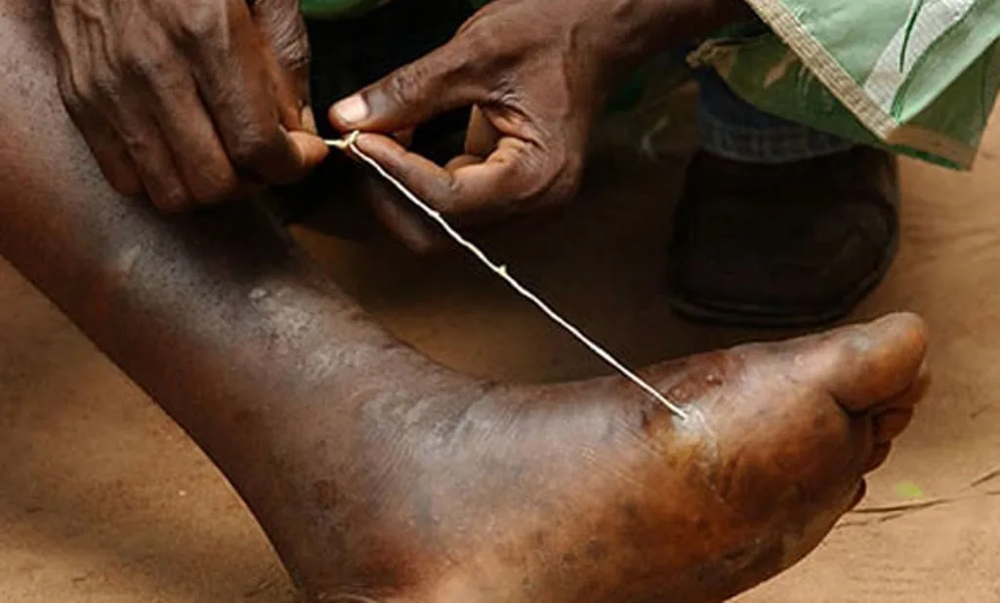

Expanded Nursing Uganda Explanation
Dracunculosis (Guinea worm) should be reviewed through safe maternal and newborn assessment, early recognition of danger signs, respectful communication and timely referral. Connect the definition to vital signs, bleeding, fetal or newborn wellbeing, patient education and local protocol requirements.
01 Dracunculiasis (Guinea Worm Disease)
Dracunculiasis is a parasitic disease caused by the nematode worm Dracunculus medinensis .
It is characterized by the emergence of a long, thread-like worm from a painful blister on the skin, usually on the legs or feet.
Dracunculiasis is a neglected tropical disease (NTD) that primarily affects poor communities in rural areas with limited access to safe water. It is a debilitating disease that can cause significant pain and disability.
The disease is transmitted through contaminated drinking water.
02 Transmission :
Vector : The disease is transmitted by copepods , tiny crustaceans found in stagnant water.
Lifecycle :
- In the Copepod (Vector) :
- Copepods ingest the infective larvae of Dracunculus medinensis from contaminated water.
- The larvae develop into infective stage within the copepod.
- In Humans (Host) :
- Humans become infected when they drink contaminated water containing the infected copepods.
- In the human stomach, the copepod is digested, releasing the larvae.
- The larvae penetrate the intestinal wall and migrate through the body, typically reaching subcutaneous tissue (beneath the skin).
- Larvae mature into adult worms within one year.
- The female worm migrates to the surface of the skin and emerges from a blister, usually on the legs or feet.
- The worm releases larvae into the water, continuing the cycle.
03 Routes of Transmission:
- Drinking Contaminated Water : This is the primary route of transmission.
04 Causes/Aetiology:
- Dracunculus medinensis Worm : The disease is caused by the Dracunculus medinensis nematode.
05 Clinical Features:
Initial Stage :
- A small, itchy blister appears on the skin, typically on the legs or feet.
- Fever, nausea, and vomiting may occur.
Blister Stage :
- Blister becomes painful, swollen, and filled with fluid.
- The worm may be visible within the blister.
Worm Emergence Stage :
- The female worm emerges from the blister, forming a long, thread-like structure.
- The worm can be several feet long and can cause intense pain as it emerges.
Secondary Complications :
- Infection of the wound : The emergence site can become infected with bacteria.
- Joint pain and stiffness.
- Lymphedema : Fluid buildup in the affected limb.
- Abscess formation: Pus collection around the worm.
Other Symptoms :
- Swelling and tenderness of the lymph nodes.
- Generalized weakness.
- Loss of appetite.
06 Diagnosis and Investigations:
- Clinical Examination : A typical blister with a visible worm emerging is usually diagnostic.
- Microscopic Examination: Examining the blister fluid or the emerging worm under a microscope can confirm the presence of Dracunculus medinensis .
- Serological Tests : Blood tests to detect antibodies against Dracunculus medinensis .
07 Prevention :
- Safe Water : Provide access to safe drinking water sources and promote safe water handling practices.
- Water Filtration : Use filters to remove copepods from drinking water.
- Boiling Water: Boiling water for at least 1 minute kills copepods.
- Education : Educate communities about the disease, its transmission, and prevention strategies.
- Environmental Management : Control mosquito breeding sites and improve sanitation in rural areas.
Management :
- There is no known drug treatment for guinea worm
Aims of Management:
- To relieve pain and discomfort.
- To prevent secondary infections.
- To prevent transmission of the disease.
Early Management:
- Wound Care : Clean the affected area with antiseptic solutions and dress the wound.
- Pain Relief : Administer pain relievers as needed.
- Preventing Secondary Infections : Administer antibiotics if secondary bacterial infection is suspected.
- Extraction of the Worm : A healthcare provider can carefully extract the worm from the blister. This process can be slow and painful and may take several days.
Medical Management:
All patients:
- To facilitate removal of the worm, slowly and carefully roll it onto a small stick over a period of days .
- Dress the wound occlusively to prevent the worm passing ova into the water.
- Give analgesics for as long as necessary If there is ulceration and secondary infection give:
- Amoxicillin 500 mg every 8 hours for 5 days
- Child: 250 mg every 8 hours for 5 days
- Or cloxacillin 500 mg every 6 hours for 5 days
- Pain Relief : Over-the-counter pain relievers can help manage pain.
- Antibiotics : Prescribed for any bacterial infections.
- Anti-inflammatory Medications : Can help reduce swelling and inflammation.
Nursing Care:
- Pain Management : Assist patients in managing pain and discomfort.
- Wound Care : Provide wound care and dressing changes as needed.
- Infection Prevention : Monitor for signs of infection and ensure appropriate wound care.
- Education : Teach patients about the disease, treatment, and prevention strategies.
08 Complications :
- Secondary Infections : The emergence site can become infected with bacteria, leading to cellulitis, abscesses, or sepsis.
- Arthritis : The worm can migrate into joints, causing inflammation and pain.
- Lymphedema : Fluid buildup in the affected limb due to lymphatic obstruction.
- Disability : Chronic pain, joint stiffness, and lymphedema can lead to significant disability.
- Social Stigma : The disease can lead to social isolation and discrimination.
09 Nursing Uganda Clinical Lens
Use Dracunculosis (Guinea worm) as a practical nursing topic, not only a memorized definition. Study medicines through indication, safety checks, expected response, adverse effects and patient teaching.
- What to understand first: define dracunculosis (guinea worm), identify the normal or expected pattern, then explain what changes when the patient is unwell.
- Why it matters in care: the nurse must recognize risk early, explain findings clearly, document accurately and know when to escalate.
- How to revise it: connect each point to assessment, nursing diagnosis or care problem, intervention, rationale and evaluation.
10 Assessment Guide
- Diagnosis or reason for the medicine, allergies, pregnancy status and previous reactions.
- Current medicines, herbal products, renal or liver risk and baseline observations.
- Dose, route, timing, dilution, expiry date and documentation requirements.
11 Nursing Priorities, Rationales and Outcomes
- Apply the rights of medication administration and facility policy.
- Monitor therapeutic response and class-specific adverse effects.
- Educate the patient on purpose, timing, missed doses, warning symptoms and adherence.
The rationale for these priorities is patient safety: nursing actions should prevent deterioration, reduce discomfort, support recovery and create clear evidence for the next caregiver.
- Expected outcome: The medicine produces the intended effect without preventable harm, and administration is accurately documented.
12 Patient Teaching and Revision Check
- Explain dracunculosis (guinea worm) in simple language the patient or caregiver can repeat back.
- Teach warning signs, medicine or follow-up instructions, hygiene or lifestyle points where relevant.
- For exams, prepare a short answer using: definition, causes or risk factors, signs, assessment, management, complications and prevention.
- For ward practice, document baseline findings, actions taken, patient response and the plan for review.
Illustrations and Diagrams (1)

Related Video Lectures
Watch nursing lecture videos on YouTube for this topic. Opens in a new tab.
Watch on YouTubeExternal link: YouTube may use its own cookies and terms. Nursing Uganda is not affiliated with YouTube.